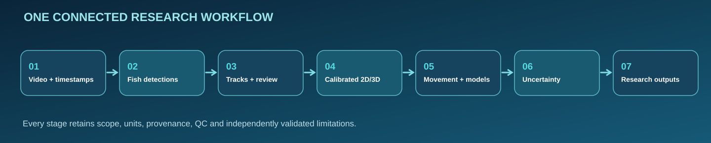
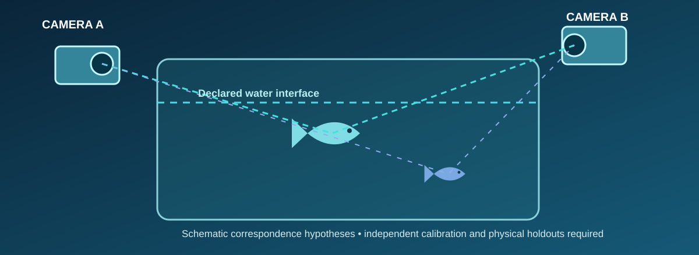

Workflow atlas
This atlas connects the existing R package, Python video runner, JavaScript explorer and scientific protocol documents. Each workflow is a research process, not a guarantee of externally validated accuracy.

Use the linked function reference for precise arguments and return values.
Workflow A — A single-camera experiment
Inputs: original video, frame presentation timestamps, known calibration or scale where applicable, fish-trained detector weights or independently generated tracks, treatment/event log.
- Inspect the source recording and clock metadata.
- Decode and track fish with the optional Python runner, or supply externally generated MOT/YOLO/idtracker.ai output.
- Validate the frame manifest and import the complete video bundle.
- Inspect missed detections, ID switches and frame coverage against independently annotated frames.
- Calculate gap-safe kinematics and event-relative summaries.
- Report the number of independent tanks, not just fish or frames.
Functions: aqt_frame_manifest(),
aqt_video_bundle_import(),
aqt_detection_metrics(),
aqt_tracking_metrics(),
aqt_kinematics(),
aqt_align_events().
Workflow B — Two synchronized cameras to 3D
Inputs: two camera PTS timelines, independently estimated synchronization markers, camera intrinsics/extrinsics, lens and refraction parameters, image locations and fish correspondence hypotheses.
- Validate synchronized timing from independent holdout markers.
- Correct the declared lens distortion.
- Declare physical refractive geometry for air–water or air–glass–water rays.
- Generate provisional cross-view fish candidates; withhold ambiguous identities.
- Reconstruct only supported paired tracks, preserving source IDs and physical diagnostics.
- Test physical reconstruction against independent XYZ reference targets.
Functions: aqt_sync_holdout_fit(),
aqt_brown_undistort_tracks(),
aqt_flatport_camera(),
aqt_crossview_auto_associate(),
aqt_auto_refractive_pipeline(),
aqt_target_holdout_benchmark().

Illustrative only: camera positions and ray lines are not measured calibration values.
Workflow C — Detector and tracking validation
Inputs: locked predictions plus independent labels for sampled frames including empty frames.
- Detection: precision, recall, F1, IoU, AP/mAP.
- Identity: IDF1, identity switches and matched positional errors.
- Sampling: documented frame inclusion probabilities and review completeness.
- External trackers/official protocols: distinguish these from native approximate metrics.
Functions: aqt_annotation_frame_plan(),
aqt_annotation_plan_audit(),
aqt_video_bundle_benchmark().
Workflow D — Tank-replicated event analysis
Inputs: logged onset times, treatment assignment by independently replicated tank, observed fish paths and specified windows.

Conceptual replication design; not an empirical study or prescribed sample size.
Functions: aqt_design_audit(),
aqt_event_epoch_summary(),
aqt_tank_event_contrast(),
aqt_functional_tank_contrast().
Workflow E — Behavioural and functional trajectories
Inputs: observed time series with gap handling and explicit support across fish/tanks.
Methods: change-point summaries, conditional Gaussian HMMs, DTW/recurrence, sparse FPCA, within-fish longitudinal models.
Functions: aqt_state_changepoint(),
aqt_hmm_decode(),
aqt_trajectory_dtw(),
aqt_sparse_fpca_fit(),
aqt_functional_longitudinal_fit().
Workflow F — Uncertainty sensitivity
Inputs: externally assumed or independently estimated image, geometric, ID-switch and model errors.
Approach: keep the observational record immutable, generate specified perturbation scenarios, rerun downstream quantities and report conditional sensitivity separately from tank-sampling uncertainty.
Functions: aqt_trajectory_ensemble(),
aqt_identity_switch_scenarios(),
aqt_joint_refractive_scenarios(),
aqt_joint_tank_sensitivity().
Workflow G — Publish research figures
Export figure devices from base R, verify units and labels, and retain a provenance statement. See publication figures and the figure gallery.
Workflow H — Animal–Computer Interaction
Audit externally recorded action, detector, command and response timestamps and distinguish simulated logic from ethically reviewed physical hardware operation. See ACI workflows.
Which workflow should I start with?
| Your dataset | Initial workflow | Next checkpoint |
|---|---|---|
| One GoPro, no annotations | A + C | Independently annotated evaluation frames |
| Two cameras, known calibration | B | Clock and physical XYZ holdouts |
| Tracking CSV only | A (from import) | Missing-frame and ID QC |
| Five fish, several tanks, event log | D | Confirm independent experimental tank count |
| Time-dependent state measurements | E | Observational gaps, state assumptions and tanks |
| Multiple uncertain fish identities | F | Sensitivity distributions, not certified intervals |
| ACI choice/actuator logs | H | Operator authorization, safety, external behavioural review |
The source protocols provide further constraints and data schemas.